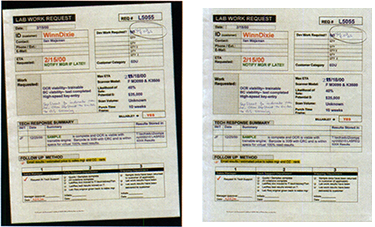
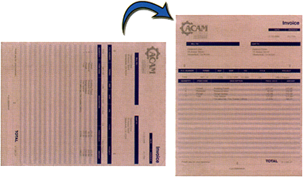
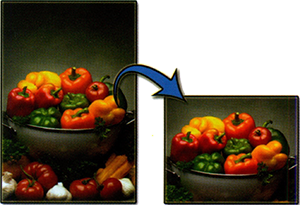
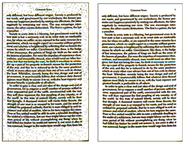
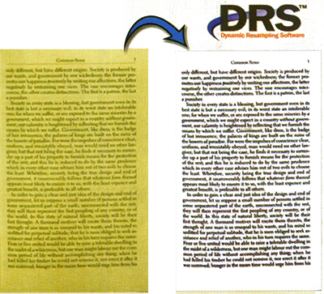
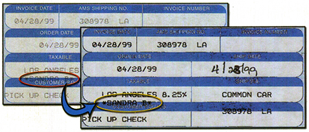

AUTOMATED IMAGE PROCESSING
With BSCAN-IP automated and manual image cleanup and quality checking can be performed on PCs without scanners. A single BSCAN-IP station can over a million images per day, depending on the number and types of image of image processing functions and speed of the computer. for the ultimate in quality results, most of BSCAN-IIPs image processing functions are automatically checked and any images that may a problem are flagged for manual review and possible correction.
If BSCAN's Undo Image Processing feature is enabled, all image processing automatically can be manually undone and performed again with different parameters in a later stage.
Crop & Deskew
Removes black borders and straightens skewed documents. If a questionable crop and deskew is performed, the image is flagged for later review and possible manual crop and deskew using the mouse.
Create Snippets
Automatically clip sections of images and create new image files. As shown below, this feature can be used to post signatures from contracts or delivery receipts to the WEB.

Automatically Delete Blank Pages
With this feature, if a page is blank, it is automaticallyy flagged for deletion. If there is a chance that it has any content, a small scribble for examplem then the page is flagged for review. During review, the flag for deletion can be turned off anf on.
Automatic Rotation
This function is very effective with most types of documents. If BSCAN has any doubt that a rotated image should have been rotated, a flag is set for review and possible correction.

ClipAutomatically locate clip one or more regions in bitonal, grayscale and color images, or setup a custom high-speed manual clipping facility to process images quickly and reliably. |
 |
DespeckleThis function has numerous filters for removing various speck sizes. If the text is very light, it is possible that despeck will further lighten the text. During the automatic processing, if BSCAN despeckles an image and senses a possible loss of readability, the image is flagged for review and correction. |
 |
Scan Quality Tests
These tests check for the possibility of text dropout, badly skewed scanning and general clarity.
| Review Orientation | May be upside-down |
| Review DRS | may need DRS tuning |
| Review Crop & Deskew | may need manual Crop & Deskew |
| Review Color Dropout | Color dropout needs review |
| Review for Content Image | May not be blank |
| Review Borders for Content | May have lost data around border |
| Review Despeckle | May have removed good data |
*see software update information for the latest list
And More
A multiple of image processing functionality is available through scripting.
Dynamic Resampling Software allows images to be rescanned on a non-scanner workstation long after they were originally scanned. If DRS is automatically performed, images with potential problems are flagged for manual review and correction by changing DRS settings. A grayscale or color scanner is required.
Color scanning seldom requires special scanner settings. With DRS and color scanner, any employee can scan their own documents at any personal or departmental color scanner and let a central BSCAN-IP station perform any cleanup that might be necessary. Before committing tje images to permanent storage, a trained worker can review and fix image clarity problems using DRS.
Color Dropout
Everywhere on the page or in the specified region, the specified color is changed to the of the surrounding background or to another color. Use color dropout on binary images, by scanning in color, performing one or more color dropout operations and then converting the image to binary.
Text Enhance
Scanning in color offers a whole new range of Image Processing functions. Out text enhance feature can dramatically improve readability of the text can be made clear, even when the background of the text is a dark color.

|
|
||||||||